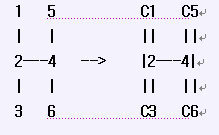

Notice:注册本OJ方式请见https://www.lydsy.com/JudgeOnline/wttl/thread.php?tid=5671
Problem 1785. -- [Usaco2010 Jan]telephone1785: [Usaco2010 Jan]telephone
Time Limit: 1 Sec Memory Limit: 64 MB
Submit: 121 Solved: 73
[Submit][Status][Discuss]Description
奶牛们建立了电话网络，这个网络可看作为是一棵无根树连接n(1 n 100,000)个节点，节点编号为1 .. n。每个节点可能是(电话交换机，或者电话机)。每条电话线连接两个节点。第i条电话线连接两个节点Ai和Bi(1 Ai,Bi n; Ai Bi)。
叶子节点只连接一条电话线，这些叶子节点是位于电话网中的一个电话亭。两头奶牛需要通话，信号是沿着电话网络中连接两个顶点之间最短的路径传递。每部交换机最多可容纳K (1 K 10)对牛同时通话，对于输入的无根树，求出在任何一个时间最多可同时对话奶牛的对数。
下面是6个节点的电话网络(无根树)：

在叶子节点1,3,5和6中有四头奶牛，如果奶牛1和奶牛3，奶牛5和奶牛6通话，那么同时通话的最大数目是2(2对奶牛同时通话)。
Input
第1行: 用空格分开的两个整数:n和k。
第2..n+1行: 第i+1行用空格分开的两个整数，Ai和Bi。
Output
仅1行: 一个整数表示可同时对话奶牛的对数。
Sample Input
6 1
1 2
2 3
2 4
4 5
4 6
Sample Output
2
HINT
Source
[Submit][Status][Discuss]
HOME
Back